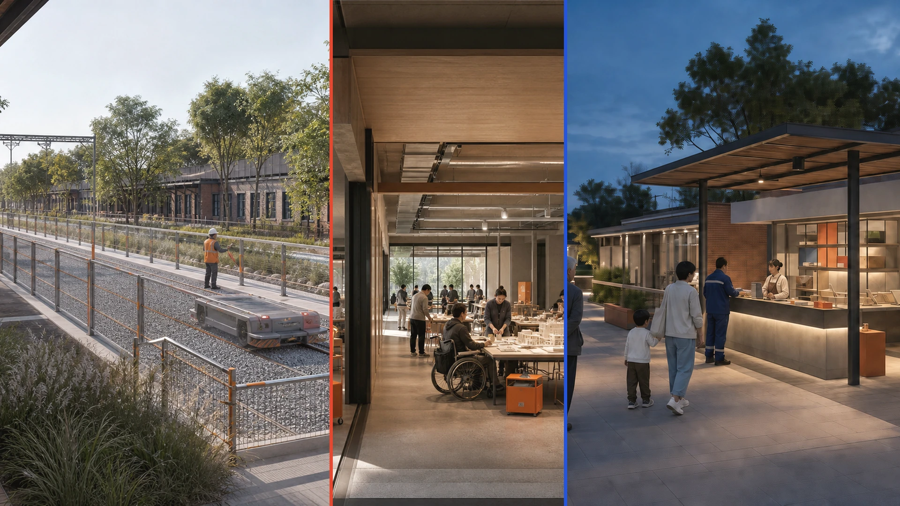
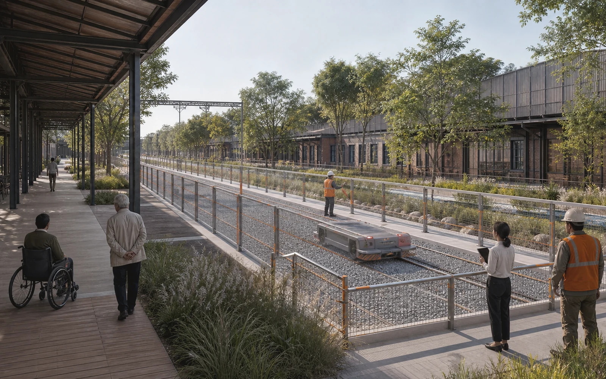
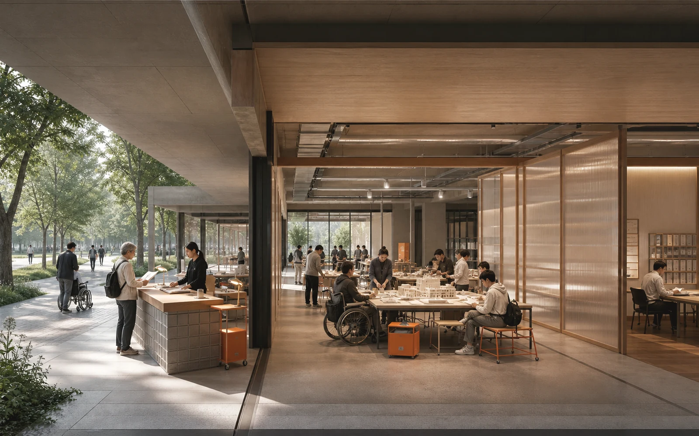
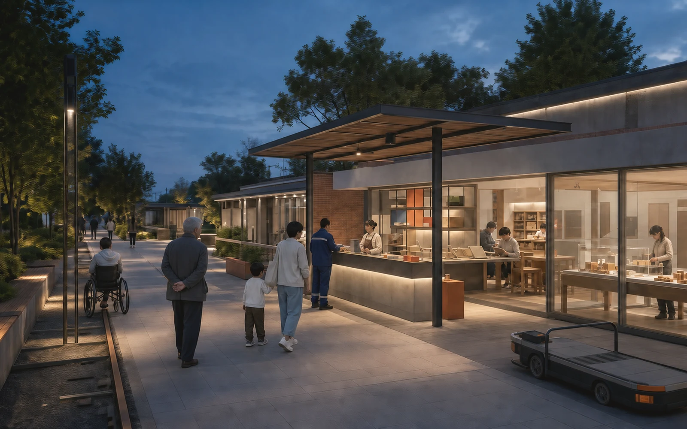

产业、人才、公共问题与五个待同意区域接口。
AI OFF, CITY ON · COMMUNITY DISPLAY ONLY
京张常在：AI退场，城市仍在
把AI拔掉，城市仍然更好用。
每一次AI试验都必须先证明无AI公共基线，经历真实拔线，并留下一项无需模型、账号或网络仍可使用的城市公共红利。
3公共红利场
12场景合同
84合成分支
NULL现场效果

BASE → BOOST → BLACKOUT → BEQUEST
不是一次展示，而是一份能退场的城市合同
BASE
无AI基线
普通通行、休息、导向和人工服务先成立。
BOOST
有限增益
只允许有限任务、最小数据、具名人工与可逆接口。
BLACKOUT
物理拔线
断开模型、网络、传感器与自动执行器，归还空间和数据。
BEQUEST
公共红利
触觉地图、有人目录、开放适配器、维修手册或养护卡继续工作。
总览地图：一条基线脊，三座公共红利场

一脊三场、六缝七件、24个概念用地单元。
12份合同、三种剖面、九个项目与12周退场调试。
重点区域：不复制三个AI展厅

DY-01-SAFETY-DIVIDEND
众智安全红利场
可触摸安全障碍库、人工讲解台、雨洪维护卡与公开失败档案
CONCEPT · PRESENTATION ONLY
DY-02-OPEN-DIVIDEND
AI原点开源红利工场
开放适配器、维修手册、双语说明模板与无需账号的共学长桌
CONCEPT · PRESENTATION ONLY
DY-03-EVERYDAY-DIVIDEND
大钟寺日常红利客厅
触觉静态地图、有人服务目录、经核史的京张步道与消费申诉路径
CONCEPT · PRESENTATION ONLYAI 场景：十二项增益，十二项无AI留城资产
- BASE
- 可触摸障碍模块与纸面安全边界
- BEQUEST
- 可触摸障碍模块与纸面安全边界
- BASE
- 公共能耗表与人工运行包络
- BEQUEST
- 公共能耗表与人工运行包络
- BASE
- 版本化失败卡与纸面风险标记
- BEQUEST
- 版本化失败卡与纸面风险标记
- BASE
- 人工雨尺与雨花园养护卡
- BEQUEST
- 人工雨尺与雨花园养护卡
- BASE
- 可复用修补手册、问题单与零件架
- BEQUEST
- 可复用修补手册、问题单与零件架
- BASE
- 开放适配器与纸面服务流程
- BEQUEST
- 开放适配器与纸面服务流程
- BASE
- 通俗双语模型说明模板
- BEQUEST
- 通俗双语模型说明模板
- BASE
- 纸面任务卡与工具借用目录
- BEQUEST
- 纸面任务卡与工具借用目录
- BASE
- 触觉静态地图与实测普通路线
- BEQUEST
- 触觉静态地图与实测普通路线
- BASE
- 有人目录、纸面材料单与电话路径
- BEQUEST
- 有人目录、纸面材料单与电话路径
- BASE
- 经核史的实体时间线与权利卡
- BEQUEST
- 经核史的实体时间线与权利卡
- BASE
- 人工比价板、退款和申诉入口
- BEQUEST
- 人工比价板、退款和申诉入口
第8周不是开幕，是城市退场日
- W00证据与责任锁定no field activation
- W01-02只运行无AI公共基线walk, rest, ask and navigate without account or model
- W03-04普通可逆构件1:1样机tactile map, staffed desk, bench and paper kit
- W05-06合成数据与影子AIno public-effect automation
- W07获授权的限时增益only if G0-G5 and C0-C5 pass
- W08城市退场日disconnect model, network, sensors and actuator
- W09-10公共红利与维护劳动审计measure ordinary service and residual asset
- W11独立评估与公众复核publish positive, negative and distributional effects
- W12保留、修改或拆除restore site and delete data when not retained
G0—G7
项目成熟度：空间、专业、资源、运营、维护和退出责任逐级闭合。
C0—C7
场景准入：公共目的、无AI基线、最小数据、人工、拔线和红利不可跳过。
更新项目
- PRJ-01公共基线脊审计
- PRJ-02六处横缝无障碍修补
- PRJ-03众智安全红利场
- PRJ-04AI原点开源红利工场
- PRJ-05大钟寺日常红利客厅
- PRJ-06七类离线可用构件
- PRJ-07公共红利合同与开放适配器
- PRJ-08四座常在地标
- PRJ-09常在周与年度退场复核
核心指标：机器完整，不等于现场成功

≈11.4 km²site_area_sqm · 临时范围
13.4%green_ratio · 概念复算
7.6%public_space_ratio · 概念复算
84 / 84仅合同分支符合预期
0runner真实个人数据
NULL现场服务、恢复、劳动与分布效果
任务覆盖与可定位证据
V4-AI-OFF-PROMISEAI退场公共承诺V4-THREE-DIVIDEND-YARDS三座公共红利场V4-TWELVE-DIVIDEND-CONTRACTS十二份公共红利合同V4-SPATIAL-DIVIDEND-SYSTEM一脊三场六缝七件V4-FIRST-TWELVE-WEEKS首12周退场调试V4-PUBLIC-RIGHTS无账号服务与独立停止权V4-METRIC-BOUNDARY合同完整度与现场效果分界V4-HERITAGE-AFTERLIFE铁路维修文化与技术后生命V4-IMPLEMENTATION-GATES项目成熟与场景准入双闸V4-RISK-REGISTER退场债务与硬停止V4-UNPLUGGED-RECEIPTS84条可复现机器回执V4-SOURCE-RIGHTS来源、生成与复用边界
总览地图 · 三层范围 · 重点区域 · 用地分区 · 交通慢行 · 蓝绿公共空间 · 建筑 · 更新项目 · AI 场景 · 核心指标 · 任务覆盖 · 自检状态 · 来源 · 假设
自检状态：当前页面是解释层，不是审批层
来源见 sources.json；假设见 assumptions.json；建筑、交通、市政、消防、文保、生态与无障碍专业闸保持有效；临时几何不会阻断内容评分，但official polygon到位后必须全量复算。